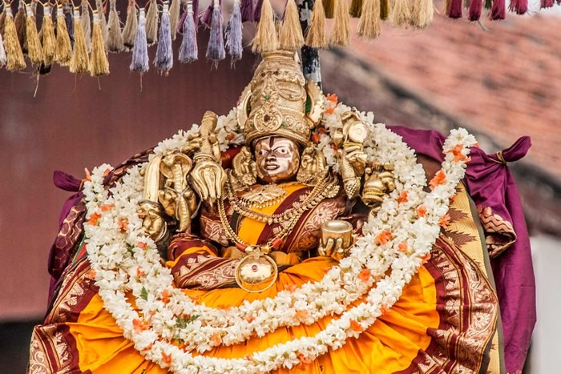
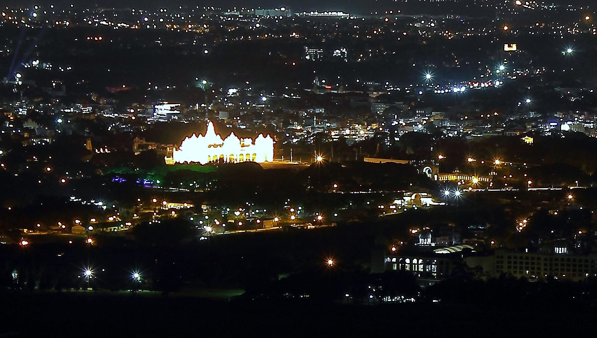
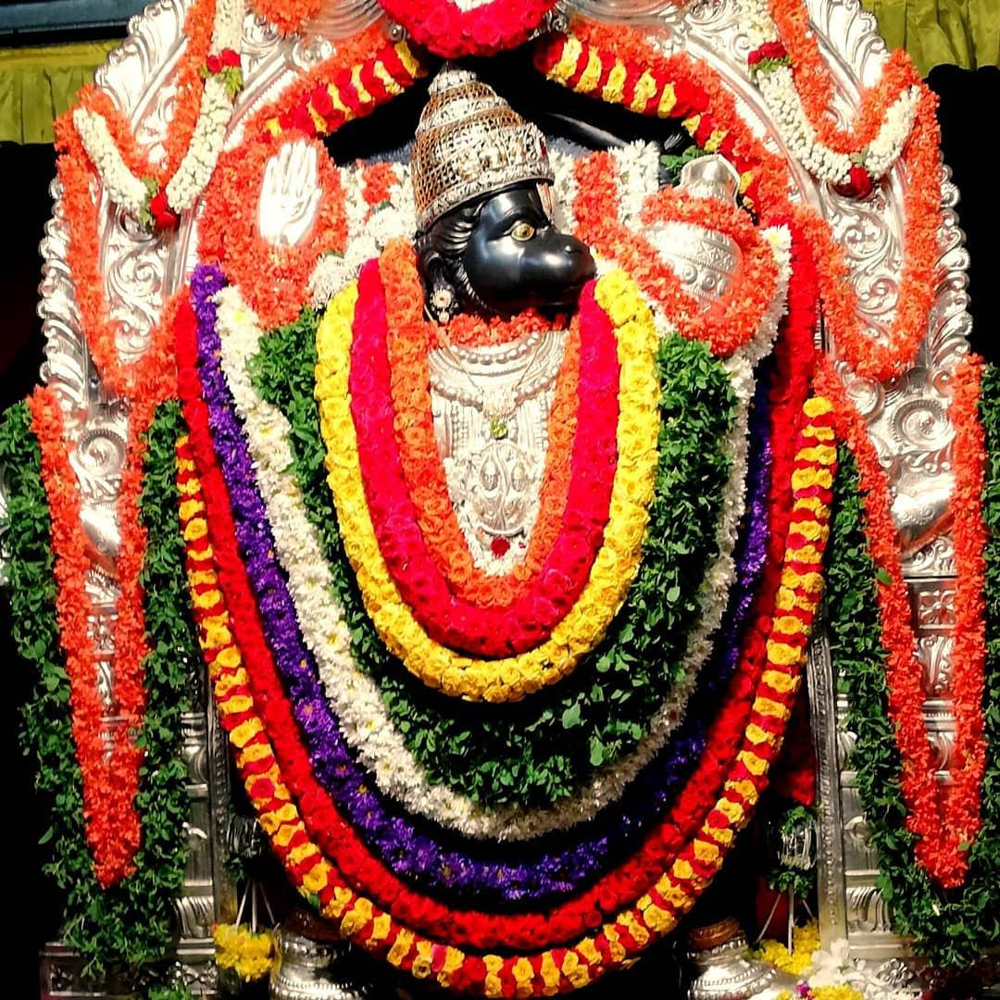
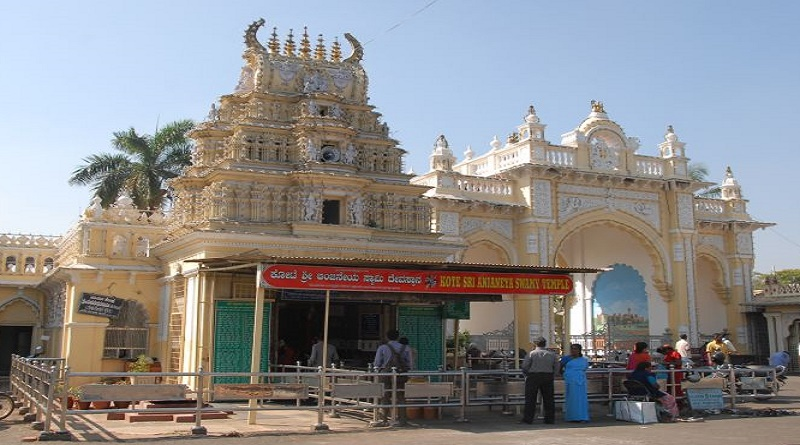
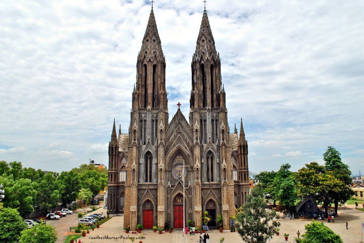
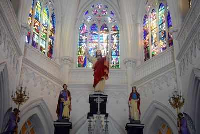
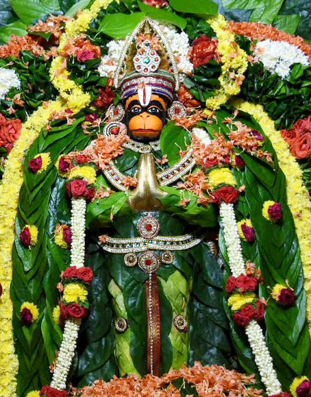
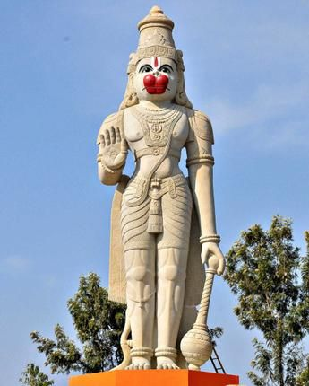

List Of Worship Places
Chamundi Hills


Chamundeswari temple is situated on the top of Chamundi hill which is about 3,489 ft. above sea level and located at a distance of 13 Kms. from Mysore. The temple is dedicated to Sri Chamundeswari, the titular deity of the Mysore Royal Family also described as ‘Mahishasura Mardini’for having killed the buffalo headed demon Mahishasura. You can reach there by vehicle or by steps.
Timings for visit: 7.30 AM to 02.00 PM , 03.00 PM to 06.00 PM and 7.30 PM to 9.00 PM
Location
Kote Sri Anjaneya Swamy


It was built by King Krishnaraja Wodeyar III. It is in the entrance of palace, Jaya Vijaya Gate. It is one of the famous and oldest temples in Mysuru.
Location
Philomena Church


St. Philomena’s Cathedral is a Catholic church that is the cathedral of the Diocese of Mysore. It is also known as St. Joseph's Cathedral. It was constructed in 1936 using a Neo Gothic style and its architecture was inspired by the Cologne Cathedral in Germany. This is one of the tallest churches in Asia.
Location
Karyasiddhi Hanuman Sannidhi


Ganapathi Sachchidananda Ashrama in Mysore has a big murti of Hanuman – Karya Siddhi Hanuman idol – in Mysore. The Hanuman murti is 42 feet tall and is place on a 30 feet pedestal. The pedestal stands on Karyasiddhi Hanuman Sannidhi (Temple). The murti is chiseled out from a 200-tonne Grey Granite Rock.
The reason for making the Hanuman Murti: Sri Ganapathy Sashichidananda Swami, the ashram chief, said - People who have faith in Hindu scriptures believe that their wishes will be fulfilled with the darshan of Hanuman. This urge of devotees made me do this.
Location